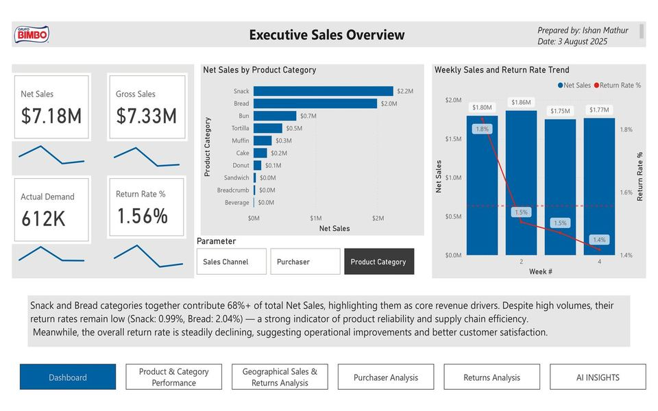
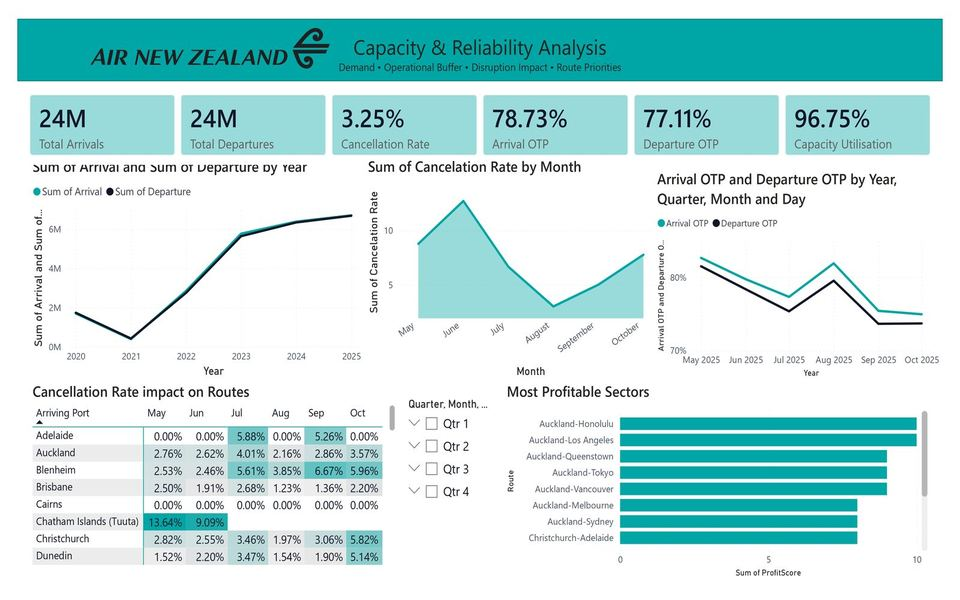

Retail Sales & Returns
Power BI · star schema · DAX time intelligence

Power BI · star schema · DAX time intelligence

Power BI · public data · documented data model

SQL case study

Python analysis notebook

Python analysis notebook
Experience, education and certifications
Data and BI analyst with 4+ years across higher education and financial services, now a Technology Services & Collections Analyst at the University of Waikato Library. I build the reporting layer between messy source systems and the people who need answers: reusable templates that cut a recurring manual task from about 4 hours to under 1 hour, an API reporting workflow running monthly in production, and 5+ dashboards and reports for senior leadership, client groups and third-party stakeholders. Earlier, at Arcesium (a D.E. Shaw Group company), daily SQL for 10+ global investment clients and validation controls that cut the time to produce daily reconciliation reporting by 40%. I work day to day in SharePoint (lists, libraries, permissions, reporting on SharePoint data) and Power Automate (approval, scheduled, file-handling and form-to-list flows); at the Library every dashboard I build is published through SharePoint to the team it serves. Master of Management (Business Analytics), University of Waikato, 2026. PMP®.
Side project: EcoQuest